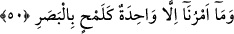

kader, belirli vakitte görünen varlığa bağlıdır.[157]
Bir hadis-i şerifte şöyle buyrulmuştur: “Allah gökleri ve yeri yaratmadan elli bin yıl
evvel yaratılmışların bütün ölçülerini yazmıştır.”[158] Efendimiz’den rivâyet edilen
başka bir hadis-i şerifte de: “Her şey Allah’ın tayin edip yarattığı ölçüler içindedir,
çok zeki olmak ve anlayıştan âciz olmak dahil.”[159] Başka bir hadis-i şerifte de: “Bir
kul dört şeye inanmadıkça îman etmiş sayılmaz; Allah’dan başka ilâh olmadığına,
benim de Hak ile gönderdiği elçisi bulunduğuma tanıklık etmek, öldükten sonra
dirileceğine inanmak ve kaderin, hayır veya şerrine yâni acısına ve tatlısına
inanmak.”[160]
Keşfü’l-esrâr’da şöyle gelmiştir; “Ehl-i sünnete göre iyi veya kötü her türlü fiil
kula âiddir ve kul bu sebeple mükâfât veya cezâ görür. Fakat bu Allah’ın istemesi,
kazâ ve takdiriyle olur. Çünkü Yüce Allah şöyle buyurmuştur; “Hepsi Allah’tandır”
de” (en-Nisâ’, 4/78).
Yine bir hadis-i şerifte Peygamberimiz (s.a.) şöyle buyurmuştur: “Kader hayrı ve
şerri ile Allah’tandır.” Bu sebeple âyet-i kerîme’de, Kaderiyye, Mûtezile ve
Havâric’ın hepsinin görüşleri reddedilmektedir.
et-Te’vilâtü’n-Necmiyye adlı eserde şu görüş kaydedilmiştir; gerek ilimle bilinen,
gerekse gözle görülen her şeyi belirli bir ölçüde yarattık, anlamındadır. Âyet-i
kerîme’nin mânâsı; “O da: Bizim Rabbimiz her şeye hilkatini (varlık ve özelliğini)
veren, sonra da doğru yolu gösterendir, dedi” âyet-i kerîme’sinde buyurulduğu gibi.
Yâni, her şey kendi zâtî yetenek ve ezelî kabiliyetinin gereği üzerine, eksik ve fazla
olmamak üzere yaratılmıştır.
İmâm Gazâlî’nin dediği gibi, imkân âleminde bu varlıktan daha güzel ve mükemmel
olamaz. Daha güzeli ve mükemmeli mümkün olsaydı da bunu Allah göstermeseydi, -
haşa- cimri sayılırdı. Oysa Allah ifâde edilemeyecek kadar cömerttir. Son derece Kâdir
olduğu halde, âciz sayılırdı.
50. Bizim buyruğumuz, bir anlık bakış gibi, bir tek sözden başka bir şey değildir.
“Bizim buyruğumuz” yaratılmasını istediğimiz herhangi bir şey için kolaylık ve
çabuklukta “bir anlık bakış gibi bir tek sözden başka bir şey değildir.” Yâni oluşu
çabuklaştırmak için ikilenmeyen bir tek sözden ibarettir. O söz de “ol!” anlamındaki
“kün” sözüdür. Yahut Bizim buyruğumuz, bir anlık bakış gibi, bir tek işten başka bir şey
değildir. Herhangi bir hareket, çaba veya zorlama olmadan bir şeyi yoktan var etmektir.
Kâmûs’ta, göz çalmak, bakış kaçırmak, denmiştir. Müfredât’ta şu kayıt vardır; “Ben,
bir şimşek parıltısı şeklinde gördüm.”